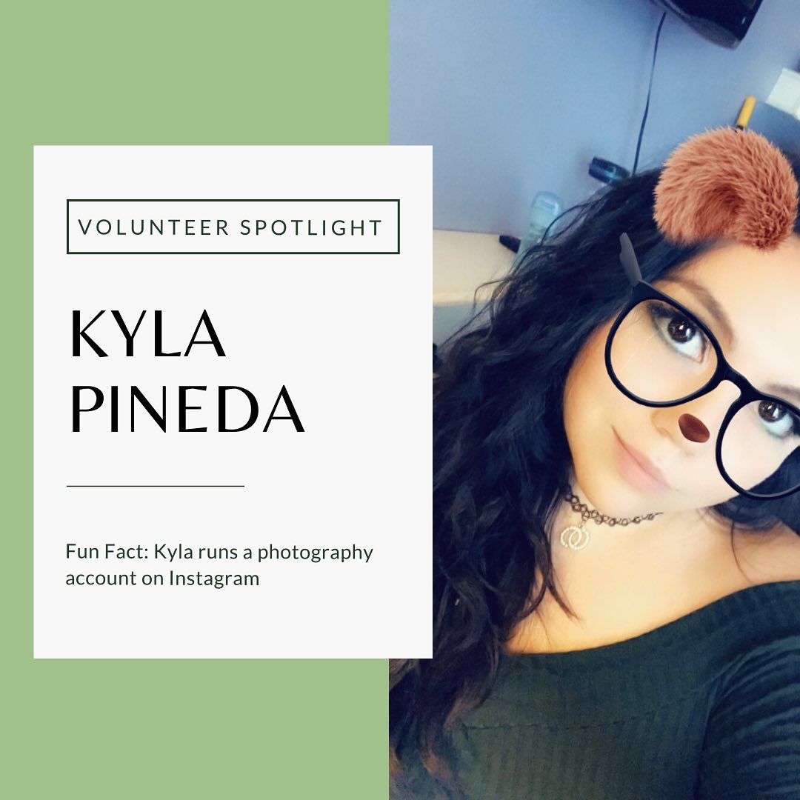
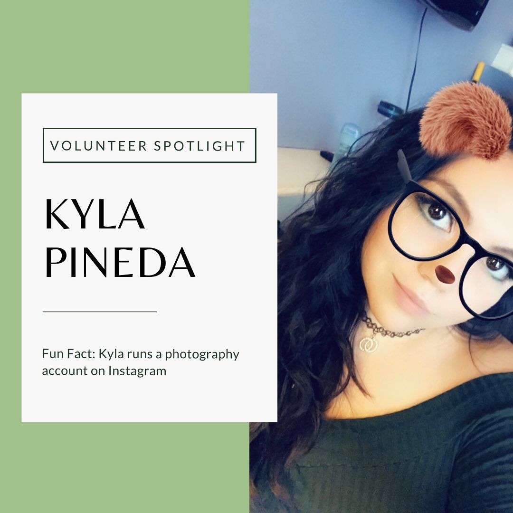

Kyla Pineda
UCR Student, Class of '23, Pre-Business Major, Minoring in Art;Owner of MiniTruckEraMagazine; Scorpio Sun, Taurus Moon, Sagittarius Rising
Hobbies include Photography, Art, Hiking, Yoga, Sketching, Netflix, Makeup, Skin Care, Baking,etc...I have a wide array of hobbies, talents, and interests due to my wide spread curiosity about the world. I find beauty in all of the arts (music, drawing, and singing being the most enjoyable for me) as well as having a deep appreciation for nature. I do enjoy sitting outside and meditating when I have the time and am feeling stressed. However, although I enjoy the ancestries of our world, I also have a deep fascination with the technology modern times give to us. During the night time, if I’m not working you could probably catch me playing an array of video games (my favorites being Minecraft, Among Us, and Call of Duty) or watching others test out the latest virtual reality equipment. That is something you may find interesting about me. I enjoy mixing the wonders new technology could offer us with the majesty of the natural world around us. For that reason, I have also found a deep appreciation for books and stories. I also like to look at the strategic way the authors write the stories and dissect the characters. I find brain stimulation with fact and figures just as important as brain stimulation with fantasy and wonder.
I graduated from a dual enrollment highschool that was meant to prepare me for college. It did a pretty good job and I thought I had everything down, but I still could not find it in myself to pick a major. Originally when I first attended University of California, Riverside in 2019, I entered as Undeclared. As seen above, I find it very hard to pinpoint one passion above another. I found it especially difficult to pick a major that would define the rest of my life and as a child entering college at 17, I couldn’t find it in me to do so. That was until I engaged myself with some colleagues and peers of mine who helped me realize there was a middle ground that wouldn’t diminish my options. This is when I declared myself a pre-business major. Not only that, but I want to go above and beyond and possibly double-major as well. I’m not entirely sure yet, but my path is clearer today than it was 2019. Not only have I been working on myself mentally since the beginning of 2020, but physically as well. I have grown and fought through so much to be where I am today. Anyone who is close to me considers themselves lucky, especially those I work with. I am honest, communicative, collaborative, and hard-working. I’m a team leader as well as an advocate for excellent team collaboration. I want the work done in the most efficient way possible. Please contact me if you have any further questions. I can’t wait to work with you! Have an amazing morning/afternoon/night!
Experience
Volunteer
• Ran Register (Check-In/Out)
• Organized Inventory
• Responsible for shop clean-up
Miscellaneous Work
• Park Cleanups
• Wrote Letters to Essential Workers
• Participated in Multiple Food Drives
• Design Merchandise
Education
UC Riverside
Portfolio


